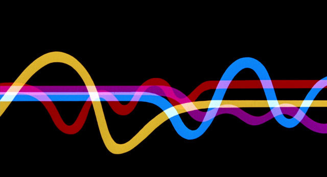

The '60s was a decade marked by the Vietnam War, political unrest, and cultural rebellion. Abstract Expressionism and Pop Art were embraced and played a bigger role in marketing and graphic design. The widespread use of hallucinatory drugs like LSD lead to bold, colorful, psychedelic designs that have since become iconic of the '60s.
